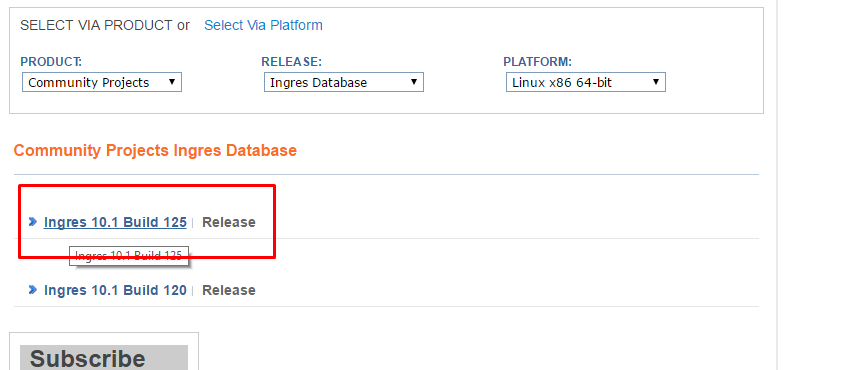
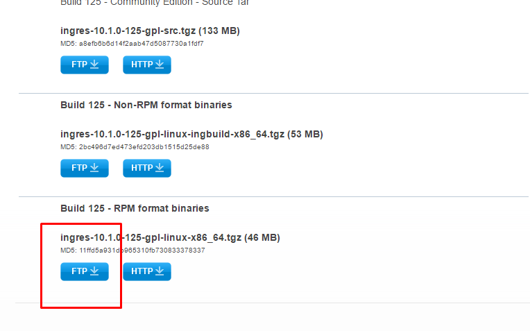
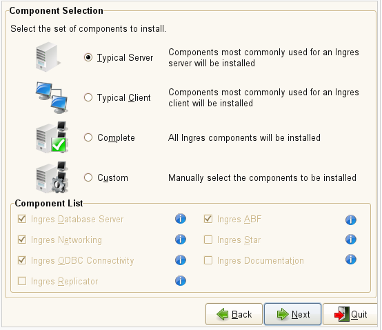
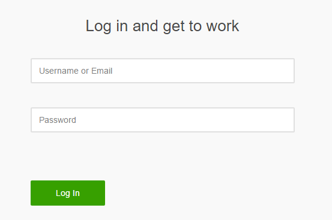

Izrada virtualnog (VMWare) stroja za potrebe nadogradnje sqlmap-a
Temu rezervirali: Filip Vuković i Filip Strunjak
Sadržaj |
Što je sqlmap?
Sqlmap je besplatan alat za penetracijsko ispitivanje koji automatizira proces detekcije i otkrivanja SQL injection ranjivosti, kao i ranjivosti poslužitelja baza podataka. Razvijen je u jeziku Python, a podržan je na većini popularnih platformi što uključuje operacijske sustave Linux, Windows i Mac OS X. Sadrži podršku za razne sustave za upravljanje bazama podataka kao što su MySQL, Oracle, PostgreSQL i Microsoft SQL Server, kao i razvijen skup opcija za izvođenje ispitivanja. Možemo reći da posjeduje moćan engine za detekciju kao i mnoge značajke za ultimativno penetriranje, a one su :
• Potpuna podrška za sustave MySQL, Oracle, PostgreSQL, Microsoft SQL Server, Microsoft Access, IBM DB2, SQLite, Firebird, Sybase, SAP MaxDB, HSQLDB and Informix.
• Potpuna podrška za 6 SQL injection tehnika : boolean-based blind, time-based blind, error-based, UNION query-based, stacked queries and out-of-band.
• Podršku za izravno spajanje na bazu podataka, bez prolaska kroz SQL injekcije, pružajući DBMS podatke, IP adrese, porto i naziv baze podataka.
• Podrška za pregled korisnika, hasirane lozinke , privilegija, uloge, baze podataka, tablice.
• Automatsko prepoznavanje lozinka hash formata i podršku za hakrianje takvih lozinka korištenjem dictionary-based napadana.
• Podrška za traženje određenih naziva baze podataka, određenih tablica u svim bazama podataka ili određene stupce kroz sve tablice svih baza podataka.
• Podrška za download i upload bilo koje datoteke s poslužitelja baze podataka, kada je software baze podataka MySQL, PostgreSQL ili Microsoft SQL Server.
• Potpora za uspostavu out-of-band TCP konekciju između napadača i baze podataka.
• Potpora za uspostavu out-of-band TCP konekciju između napadača i baze podataka.
Još možemo reći da je Sqlmap jedan od najpopularnijih i moćnijih alata za ubrizgavanje sql injekcije, te osim opisanih funkcionalnosti, alat obilježava jednostavnost instalacije i uporabe, kao i brzina izvođenja ispitivanja pa se preporuča svim korisnicima.
Cilj projekta
Naš zadatak za realizaciju ovog projekta je bio da kreiramo Virtulani (VMWare) stroj za potrebe nadogradnje sqlmap-a. Prvo smo morali odabrati DBMS koji trenutno nije podržan od strane sqlmap-a te ga instalirati na našem virtualnom stroju, dalje smo morali kreirati ranjivu PhP stranicu na SQL injection. U bazi za tu stranicu moramo imati tablicu users sa stupcima id, ime i password, tu smo završili sa kreiranjem okolinom za rad. Naš najbitniji zadatak je napisati nadogradnju za sqlmap u pythonu kako bi DMBS koji smo instalirali i koji nije podržan od strane sqlmap-a bio podržan. U nastavku će biti navedene i kratko opisane sve korištene tehnologije.
Korištene tehnologije
VMWare Workstation - Strunjak
Za izradu virtualnog stroja korišten je VMWare Workstation Pro. Na njemu je moguće pokretati različite operacijske sustave kao virtualne strojeve. Za izradu ovog projekta korišten je 64-bitni Ubuntu Linux operacijski sustav.
{kind=link}
Ubuntu
Instalacija DBMS-a i povezivanje istoga sa PHP ranjivom stranicom izvršena je na 64-bitnom Ubuntu Linux operacijskom sustavu.
PHP
Za izradu ranjive stranice na napad SQL injekcije korišten je PHP programski jezik.
Apache
Apache HTTP Server je otvoreni web server koji nosi titulu najkorištenijeg web servera u svijetu. Izvorno se temelji na NCSA httpd server, razvoj Apache je započeo početkom 1995. godine. Apache je razvila i održava otvorena zajednica programera pod pokroviteljstvom Apache Software Foundation. Najčešće se koristi na Unix sustavima (obično Linux).
Hadoop
- Strunjak
Apache Hadoop je razvojni okvir koji omogućuje distribuiranu obradu velikih količina podataka putem mreže računala koristeći pri tome jednostavne programske modele. Osmišljen kao poslužitelj za tisuće strojeva, omoguććujući im pri tome lokalno pohranjivanje i obradu podataka. Dizajniran je za otkrivanje i obradu kvarova na aplikacijskom sloju. U ovome projektu bila je potrebna instalacija Hadoop-a kako bi bilo moguće instalirati Hive sustav.

Instalacija Apache Hadoopa prilično je kompliciran posao. Za početak je potrebno instalirati neku noviju verziju Jave (1.5 na dalje). Zatim je potrebno dodati novoga korisnika na kojemu će se pokretati Hadoop (u našem primjeru novi korisnik je nazvan hduser). Kod novokreiranog korisnika treba izvršiti konfiguraciju SSH i onemogućiti IPv6. Hadoop je potrebno preuzeti na Appache Download Mirrors i raspakirati tu datoteku na željenoj lokaciji (kod nas /usr/local/Hadoop/). Hadoop sadrži HDFS – Hadoop Distributed File System. Potrebno je napraviti ažuriranje konfiguracije datoteke ./bashrc. Sa Hadoop-om dolazi nekoliko konfiguracijskih .xml datoteka koje je potrebno podesiti. Takve datoteke su core-site.xml, mapred_site.xml, hdfs-site.xml i yarn site. Potrebno je strogo paziti kako ne bi došlo do pogrešaka u konfiguraciji jer su greške teško uočljive. Hadoop se pokreće naredbama sbin/start-dfs.sh i sbin/start-dfs.sh (ili start-all.sh koja obuhvaća obje prethodne naredbe).
{kind=link}
Hadoop se otvara na portovima 8088 i 50070.
{kind=link}
Hive
- Strunjak
Apache Hive jest softver za skladištenje podataka koji olakšava čitanje, pisanje i vođenje velikih kolekcija podataka. Za povezivanje korisnika sa Hive-om koristi se komandna linija i JDBC driver.
Instalacija i korištenje -Strunjak
Nakon instalacije Hadoopa preostaje nekoliko koraka za instalaciju hive DBMS-a. Potrebno je skinuti i raspakirati neku verziju hive-a. Potrebno je konfigurirati, odnosno dodati linije u .bashrc datoteku, kao i konfiguracijsku hive-env.sh datoteku. Za pokretanje hive-a treba instalirati i Appache Derby čija instalacija sada neće biti detaljnije opisivana. Jedina stvar koju je još potrbno učiniti jest promjena privatnosti za hive datoteke korištenjem naredbe chmod g+w. Instalacija je gotova i sljedećim naredbama se pokreće:
{kind=link}
Valja još jednom napomenuti da se hive sustav pokreće na aktivnom hadoop serveru. Daljnje izvršavanje sql upita u sustavu hive predstavlja standardan način korištenja sql jezika:
{kind=link}
Thrift - Strunjak
Za povezivanje PHP skripte i hive baze podataka koristi se Thrift klijent. Thrift se izvršava na serveru Hiveserver2 (zadani port: 1000). Za početak je potrebno preuzeti potrebne thrift datoteke. Kako bi thrift funkcionirao potrebno je promijeniti konfiguracijske postavke u hive-site.xml konfiguracijskoj datoteci koju korisnik sam treba kreirati prema template datoteci. Ne smije se zanemariti da hadoop server također treba biti pokrenut jer inače hive neće raditi. Na slici ispod nalazi se primjer isječka PHP koda koji se koristi za thrift.
{kind=link}
Ingres
Vuković
Kao što je već ranije navedeno, za potrebe nadogradnje sqlmap-a potrebno je koristiti sustav upravljanja bazama podataka (dalje DBMS (engl. database management system)) koji do sada nije podržan od strane sqlmap-a. Odlučili smo koristiti Ingres. Ingres je sustav za upravljanje relacijskim bazama podataka. Trenutno je među vodećim upravljačkim DBMS-ovima dizajniran sa smanjenje IT-troškova i vremenskih zahtjeva. Posljednja verzija je verzija 10.2.
Ingres baze podataka je open-source SQL sustav za upravljanje relacijskom bazom podataka namijenjen za podršku velike poslovne i vladine programe. Kao što smo i rekli Ingres je u potpunosti open-source sa globalnom zajednicom korisnika. Action Corporation kontrolira razvijanje ingresa i stvaranje sljedece certificirane verzije za preuzimanje ako i suport za cijeli svijet.
Ingres je započeo kao istraživački projekt na Sveučilištu Berkeley u Kaliforniji, s početkom u ranim 1970-ih, a završava 1985. Izvorni kod, kao što je to bilo i kod drugih projekata na Berkeley, bio je dostupan na minimalne troškove pod verzijom BSD licencom. Ingres stvorio brojne komercijalne aplikacije baze podataka, kao što su Sybase, Microsoft SQL Server, nonstop SQL i brojne druge.
{kind=link}
Instalacija
Prvi korak instalacije je naravno preuzimanje Ingresa sa službene stranice Actian-a http://esd.actian.com/ . Kako bi mogli pristupiti verziji koju smo odabrali kao Product : Comunity project, kao Relase : Ingres database i kao našu platformu: Linux 64 bita (ovisno o vašem procesoru)

Odabrali smo najnoviju verziju, ali na izbor imamo različite formate, od izvornog koda,RPM formata i binarnog formata. Mi smo odabrali RPM format koji ima gui setup aplikacije. Njega smo raspakirali i pokrenuli smo setup.

Među važnijim koracima instalacije je odabir opcije korištenja Ingresa. Mi smo odabrali onu opciju koja nam i treba a to je tipičan server.

Uz ove postavke koje nam nam nudi setup. Morali smo još povezati ingresa sa php-om ( verzijom 5.6, zašto ta verzija, objasnit ćemo poslije) i sa apache2 serverom. Za povezivanje sa php, trebali smo u konfiguraciju php-a odnosno u file php.ini napisati sljedeće naredbe od kojih su php_ingres.dll i putanja do instaliranog ingresa.
{kind=link}
{kind=link}
{kind=link}
extension=php_ingres.dll II_SYSTEM=/opt/IngresII/ingres
I za povezivanje ingresa i apache2 u kongiguraciju apache2.config treba napisati sljedeće linije
LD_LIBRARY_PATH=$LD_LIBRARY_PATH:$II_SYSTEM/ingres/lib export II_SYSTEM LD_LIBRARY_PATH
Također potrebno je i urediti okolinu Ingresa u file-u .bashrc, sljedeće naredbe smo upisali u .bashrc gdje smo postavili putanju do Jave, putanju do instaliranog Ingresa itd.
export JAVA_HOME=/usr/lib/jvm/java-1.6.0-openjdk-1.6.0.0/ export PENTAHO_JAVA_HOME=$JAVA_HOME export PATH=$JAVA_HOME/bin:$PATH #II_SYSTEM=/opt/Ingres/IngresII #PATH=$II_SYSTEM/ingres/bin:$II_SYSTEM/ingres/utility:$PATH #LD_LIBRARY_PATH=/lib:$II_SYSTEM/ingres/lib:$LD_LIBRARY_PATH export II_SYSTEM PATH LD_LIBRARY_PATH II_SYSTEM=/opt/Ingres/IngresI1 PATH=$II_SYSTEM/ingres/bin:$II_SYSTEM/ingres/utility:$PATH LD_LIBRARY_PATH=/lib:$II_SYSTEM/ingres/lib:$LD_LIBRARY_PATH export II_SYSTEM PATH LD_LIBRARY_PATH
Nakon što smo sve instalirali i podesili, možemo pokrenuti naš Ingres. Sa naredbom Ingstart pokrećemo sustav. Za početak moramo kreirati bazu a to činimo sa createDB.
Kada smo kreirali bazu, sad možemo i pisati neke upite. Upite pišemo tako, da prvo odaberemo bazu gdje ćemo pisati, a to radimo sa sljedećom naredbnom.
ingres NazivBaze
Sada nam je otvoren editor u terminalu i tu pišemo sql, jedino razlika je da na kraju upita pišemo \g za izvšenje upita. U bazi pod imenom "baza" kreirali smo tablicu users sa sljedećim stupcima : idUser (int) , username(varchar(255)) i password(varchar(255)). Naša baza i tablica je spremna za korištenje sada, pa hajmo je koristiti.
Ranjiva web stranica
Vuković
Ranjivu web stranicu smo napravili u obliku klasične login stranice. Kao što vidimo na slici, imamo unos username-a i naravno unos lozinke odnosno passworda, te gumb za submitanje prijave. Ova stranica mora biti ranjiva na sql injection, kako bismo mogli provjeriti ispravnost naše nadogranje sqlmap-a za Ingres Database. Php verziju koju smo koristili za ovu web stranicu je verzije 5.6 jer php ingres modul 2.0.0. podržava verzije ispod 7.

Kada smo instalirali napokon Ingres i php modul za povezivanje sa Ingresom, funkcija ingres_connect nam omogučava povezivanje sa našom bazom. Parametri za tu funkciju su naziv baze(baza) korisnicko ime (fvukovic) i lozinka (molimte).Sljedeći PHP kod je tipičan i možemo reći najjednostavnija logika za prijavu korisniku u određeni sustav. Kada se pritisne submit, povlačimo podatke iz text boxa username i password te kreiramo upit "Select * from users where username='{$username}' and password = '{$password}'". Za ovaj upit vidimo da je ranjiv na SQL injection, gdje jednostavno unesemo username i zakomentiramo ostatak upita.
{kind=link}
<?php
$link = ingres_connect("baza", "fvukovic", "molimte")
or die("Ne moze se povezat");
echo "Uspjesno ste povezani";
if (isset($_POST['submit'])) {
if (empty($_POST['username']) || empty($_POST['password'])) {
$error = "Username or Password is invalid";
}
else
{
$username=$_POST['username'];
$password=$_POST['password'];
$rezultat = ingres_query($link, " Select * from users where username='{$username}' and password = '{$password}'");
if ($rezultat == 1) {
$_SESSION['login_user']=$username;
header("location: profile.php");
} else {
$error = "Username ili Password su krivi";
ingres_close($link);
}
?>
Literatura
1. sqlmap , dostupno 18.1.2017.
2. Hadoop, dostupno 18.1.2017.
3.Hive instalacija, dostupno 18.1.2017.
4. Thrift.
5. Apache, dostupno 18.1.2017.
6. / Ingres, dostupno 18.1.2017.
7. / ingres modul, dostupno 18.1.2017.